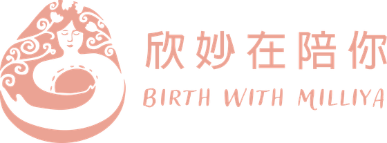
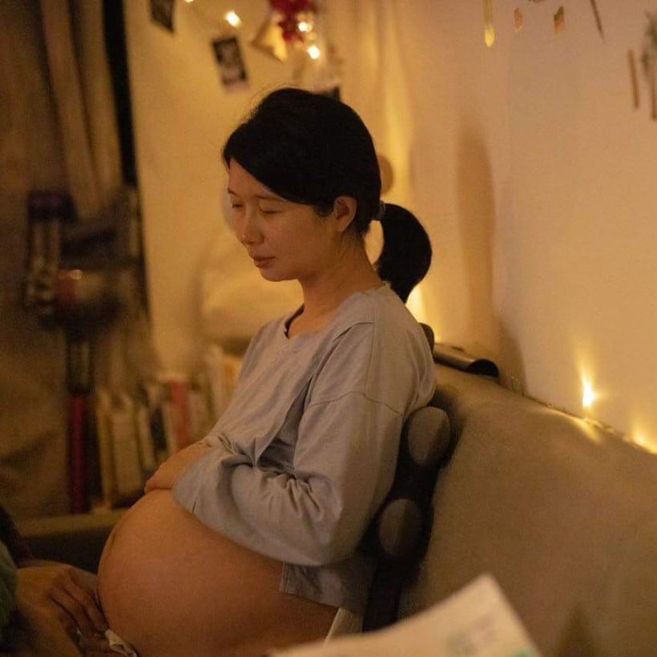
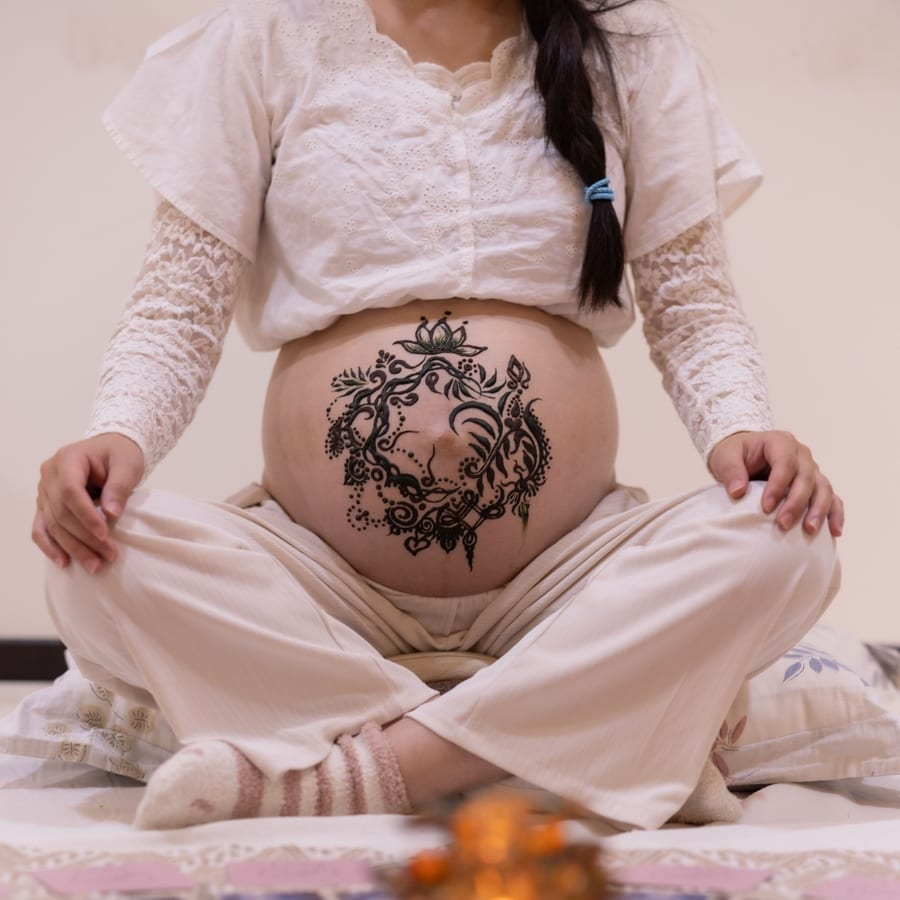
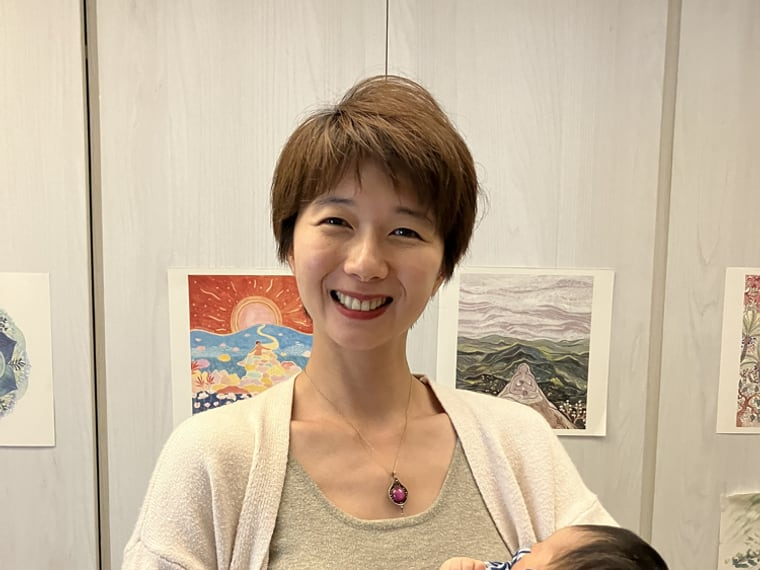
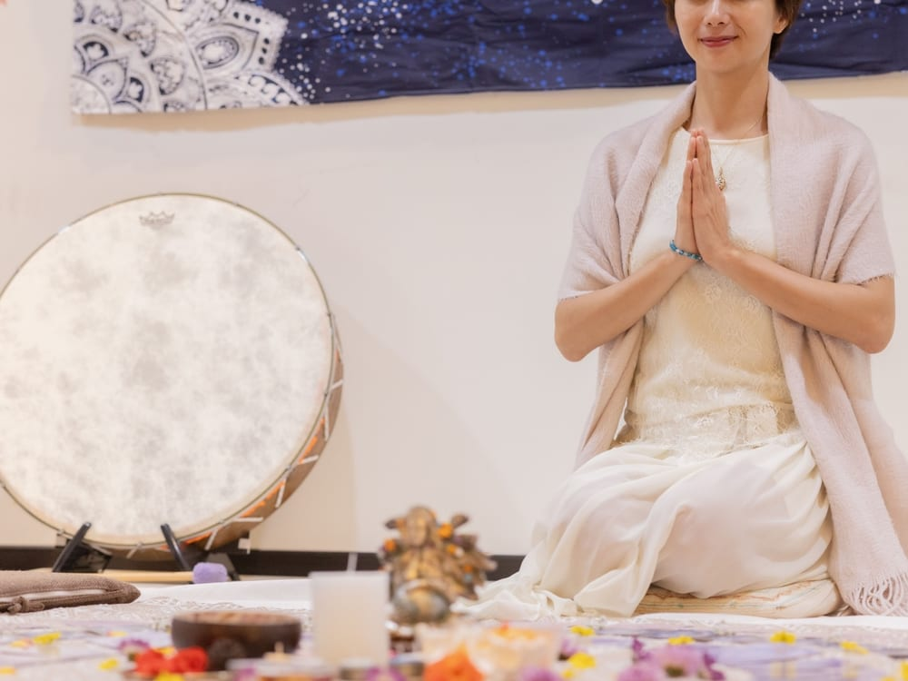
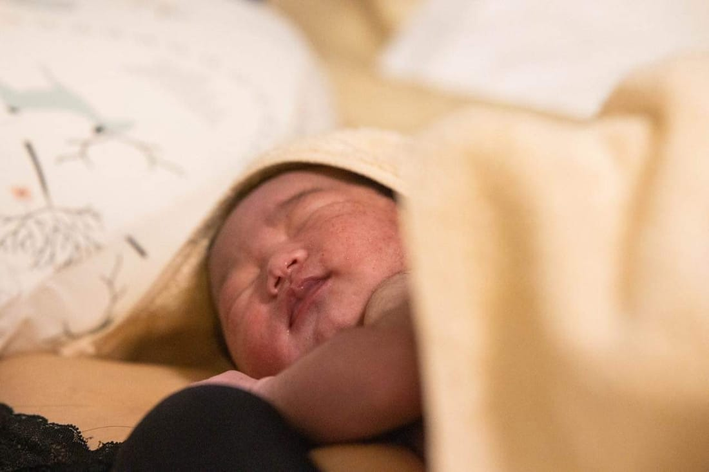

Birth Choices Guide
A · B · C 三步驟，
陪妳踏上這趟生育探索之旅。
製作 欣妙在陪妳 Birth with Milliya

每一個出生，都是獨一無二的
分娩經驗，對心理健康和母嬰關係有著深遠的影響。它沒有對錯、沒有優劣，只有妳的內在渴望，與「妳的真實」。
這份體驗是上天給的，是造物主賜給我們、最美也最獨一無二的禮物。
妳的生產決定，屬於妳。
當妳懷孕時，妳可能會遇到來自周圍的人——家人、伴侶、朋友、陌生人、醫療人員，甚至媒體（電影、電視、書籍、影片，以及社交媒體），他們呈現出一種較為負面、甚至帶著壓迫感的分娩觀點。
這些觀點，將分娩描述為充滿風險、困難，甚至令人畏懼的過程。或許這些訊息和它的傳播者認為，分娩僅僅是一個醫療事件，並認為女性的身體無法自然分娩，必須依賴外力來干預或控制整個過程。

妳可能會發現，這些問題會帶來許多線索，幫助妳理解文化如何影響分娩的經歷，以及這些影響如何塑造妳的信念。每個文化和社會對分娩的看法不同，有些認為它是一個神聖的過程，而有些則將它視為一個醫療事件。我衷心建議妳，花些時間來檢視自己的信念——這樣可以幫助妳辨識出哪些觀念對妳有幫助，哪些信念可能需要修正。
花時間回顧自己對分娩的記憶（自己被出生的、母親傳達的、親友的、童年時聽聞過的），將有助於妳發現現任何可能存在的限制性信念。我們的信念，會塑造我們對分娩的想法和感受，並影響我們所做的選擇。
最大眾的選擇。有最多的醫療標準、入院規範與完善的醫療資源。常規使用內診、分娩監視裝置、催生、剪會陰、上產檯、推肚子、剖腹等技術。氣氛相對冰冷、講求效率。
備有樂兒病房、水池、有助產師，服務相對彈性，可以依產婦需求討論生產計畫。其中又分相對介入少的與介入高的院所。有許多院所仍會限制母親的自由。
通常是助產師的家或工作室，氣氛相對溫馨。備有基礎的醫療工具與藥品，目前台灣的選擇不多。助產師可進行注射、縫合、給藥品等醫療行為。
目前相對小眾的生產方式。如同過去產婆到家中接生般，助產師會到家中協助生產、進行育兒指導。通常會兩人一組出勤，從旁陪伴母親生產。
在國外越來越流行的自主生產 Free Birth。刻意不邀請醫療人員到家中協助，產婦在親友陪伴下獨自在家生產。私密性高、自由度高，無醫療介入。
| 評估項目 | 醫療院所生產 | 居家生產 | 無人協助分娩（自主生產） |
|---|---|---|---|
| 醫療介入的可及性 | 可立即使用各種醫療介入措施，如催產、剖腹產等；可提供硬膜外麻醉等高級疼痛管理選擇。 | 無法提供硬膜外麻醉等高級疼痛管理，但可使用氣體和空氣（Entonox）、溫水浴等方式緩解疼痛。 | 沒有醫療介入，完全由產家自行準備並承擔後果。自主生產的產家認為，無醫療介入能保護媽媽和嬰兒免受醫護控制所導致的風險。 |
| 緊急情況的處理 | 配備專業醫療團隊，可迅速處理產程中的緊急情況。 | 若發生緊急情況，需轉送醫院，可能延遲處理時間。 | 無專業醫療人員在場，無法即時處理緊急情況。選擇自主生產的女性通常認為，醫院的不預期介入反而增加風險。 |
| 感染風險 | 存在醫院相關感染的風險。 | 在熟悉的家庭環境中，感染風險較低。 | 在熟悉的家庭環境中，感染風險較低。 |
| 生產環境 | 環境較為陌生，可能限制行動和飲食；受醫院政策限制，如訪客人數、分娩姿勢等。 | 在熟悉的環境中生產，感覺更放鬆。可由產婦選擇姿勢、飲食，並邀請家人參與。 | 環境完全由自己掌控，產家可以完全依照自己的喜好調整生產環境。 |
| 疼痛管理選擇 | 提供多種疼痛管理選擇，包括硬膜外麻醉。 | 無法提供硬膜外麻醉，但可使用氣體和空氣（Entonox）、溫水浴等方式。 | 無醫療疼痛管理，需完全依賴自身應對策略。產家認為，無干擾的生產使生理性生產的機會提高，女性身體自有的耐痛賀爾蒙與喜悅賀爾蒙得以完整發揮。 |
| 適合對象 | 適合高風險妊娠，或有潛在併發症的孕婦。 | 適合低風險妊娠，且無慢性疾病或其他併發症的產婦。根據 NHS 資訊，經產婦（非首次生產）在醫院分娩同樣安全。 | 適合信任自然分娩與高自主意識的女性，或對醫療體系不信任、曾有過負面醫療經驗的女性。 |
| 其他考量 | 可能需要與醫療人員互動，影響產家體驗。 | 需要提前準備必要的設備，如防水布、毛巾等；需考慮緊急轉送醫院的可能。 | 無人協助分娩通常被認為風險極高，不被醫療專業人員支持。選擇自主生產的女性通常經過深思熟慮，了解各種權能與益處，並基於個人經驗和信念做出決定。 |
請注意，選擇生產地點應根據個人健康狀況、風險評估，以及個人偏好來決策。建議與妳的醫療保健提供者討論，以做出最適合妳的選擇。
不要只用邏輯與陽性能量來做決定與判斷。記得，也要回到內在感受那份指引——感受自己，是否能夠打從心底信任對方。
陪妳，踏上妳獨一無二的旅程

融合 Free Birth Society 自主生產協會、EmbodyBirth & BellyDance Birth、覺知分娩與子宮直覺舞蹈的教材與精神。
陪妳踏上妳獨一無二的旅程。

一起探索與覺察、平衡陰陽能量、連結內在。
回到妳自己。

以上這些整理，希望對妳有所幫助。
誠心祝福妳，找到屬於妳自己的生產方式。
盼有緣，可以陪伴到妳。
Mamaste!

IG @birth.with.milliya · birthwithmilliya@gmail.com